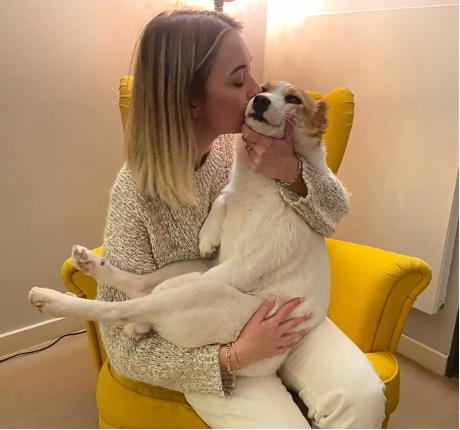
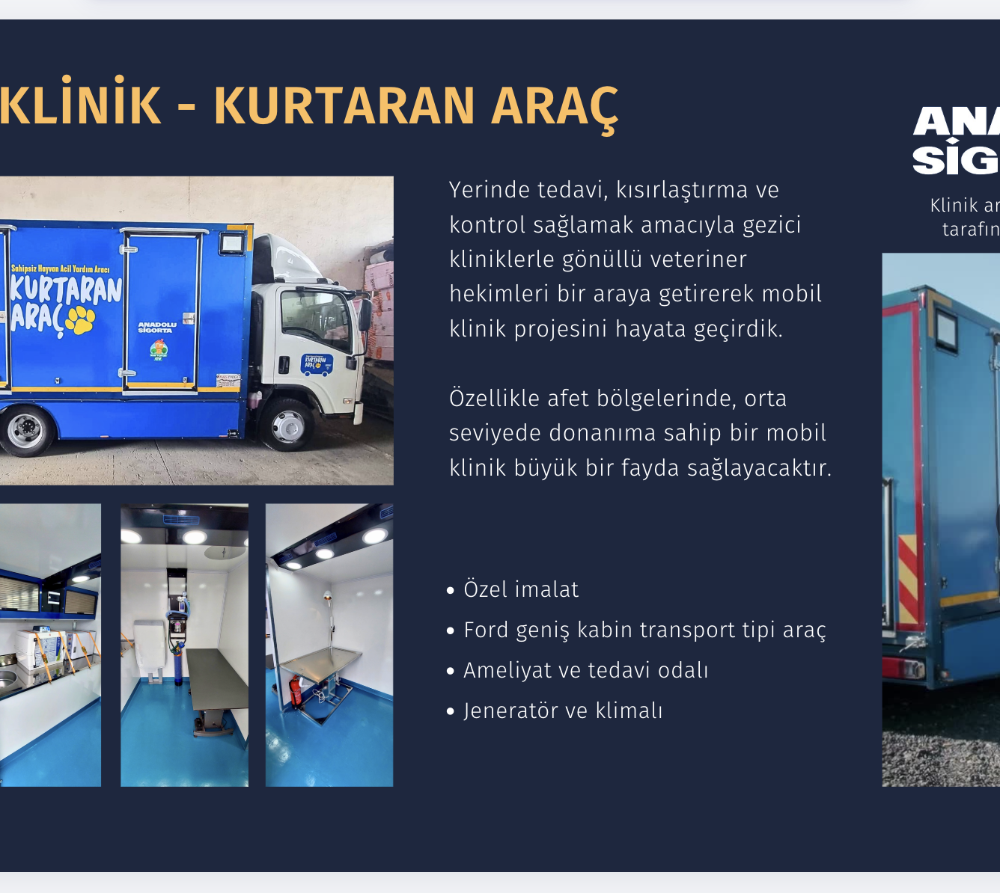
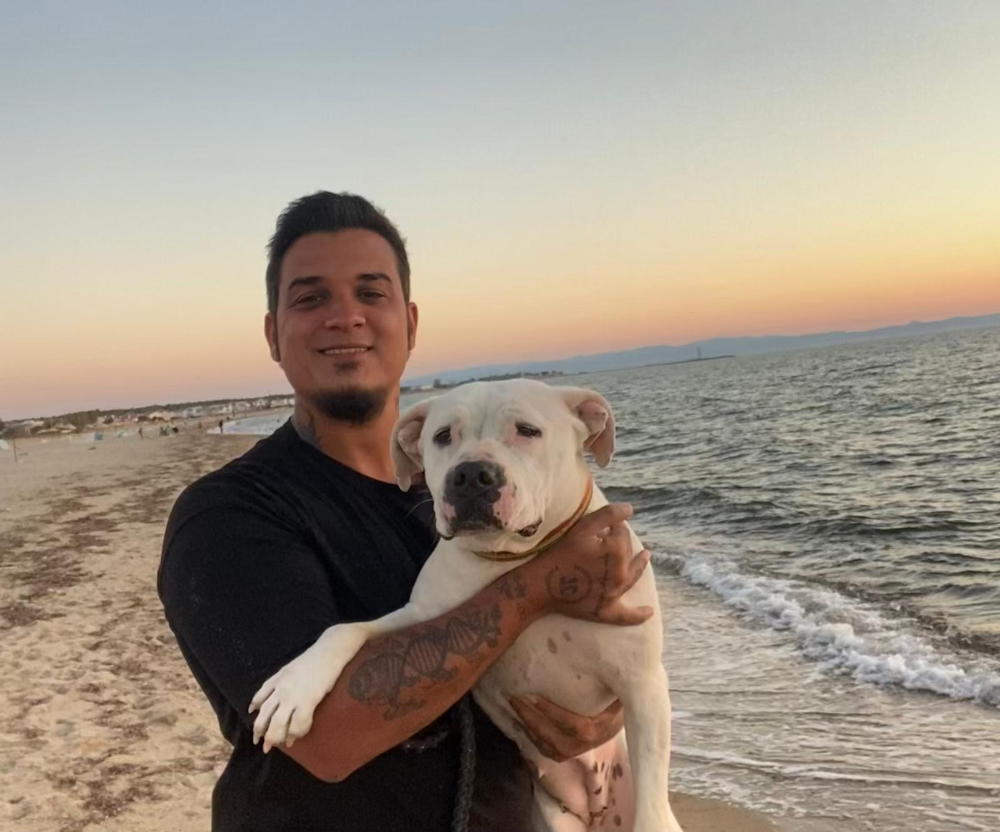
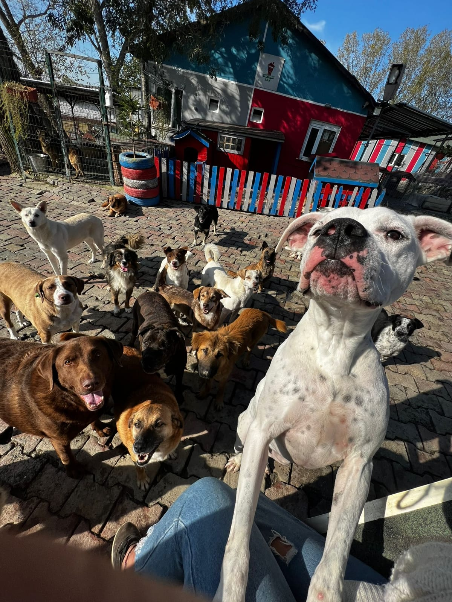
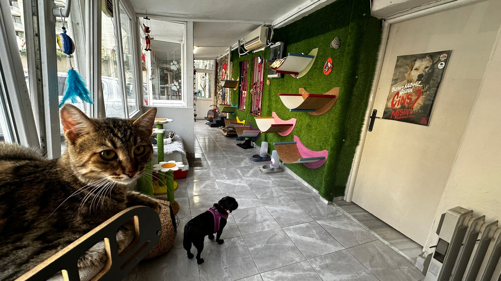
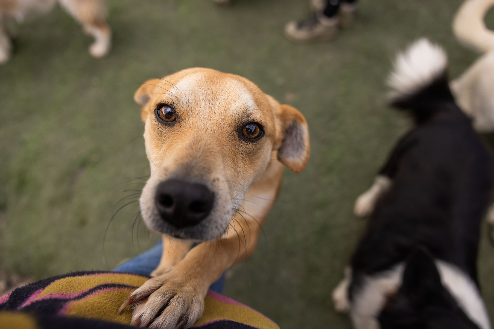

Lucy’nin yeni hayatı
Kanser tedavisi devam ederken bir aile ona yalnızca evini değil, bütün kalbini açtı. Lucy artık tedavisini kendi evinde sürdürüyor.
Hikâyeyi okuBlog Merkezi · Haberler ve Hikâyeler
Mutluluk hikâyeleri, saha notları ve projelerimizden haberler.

Kanser tedavisi devam ederken bir aile ona yalnızca evini değil, bütün kalbini açtı. Lucy artık tedavisini kendi evinde sürdürüyor.
Hikâyeyi oku
Anadolu Sigorta’nın desteğiyle tedavi, kısırlaştırma ve kontrolleri ihtiyaç olan yere taşıyoruz. Özellikle afet bölgelerinde büyük fark yaratıyor.
Hikâyeyi oku
Irkı ve yaşı yüzünden yıllarca gözden kaçan Kevok, onu gerçekten gören insanla tanıştı. Artık her sabah sahilde yürüyor.
Hikâyeyi oku
Hadımköy’deki kulübelerin yalıtımı yenilendi, bahçe zemini düzenlendi. Gönüllülerimize teşekkürler.
Hikâyeyi oku
Yavru kediler için ayrı bir sosyalleşme odası açtık. İlk misafirler çoktan yerleşti.
Hikâyeyi oku
Sahiplendiğiniz canla geçireceğiniz ilk yedi gün için pratik öneriler: beslenme, tuvalet alışkanlığı ve güven kurma.
Hikâyeyi okuYazı detay sayfaları içerik girildikçe eklenecektir.